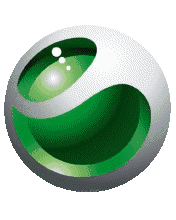

El movimiento rectilíneo uniforme (MRU) es un movimiento que se realiza sobre una línea recta, a velocidad constante (con magnitud y dirección constantes). Se denomina trayectoria al recorrido que describe un objeto al desplazarse de un punto a otro. La física clasifica los movimientos por su trayectoria:
